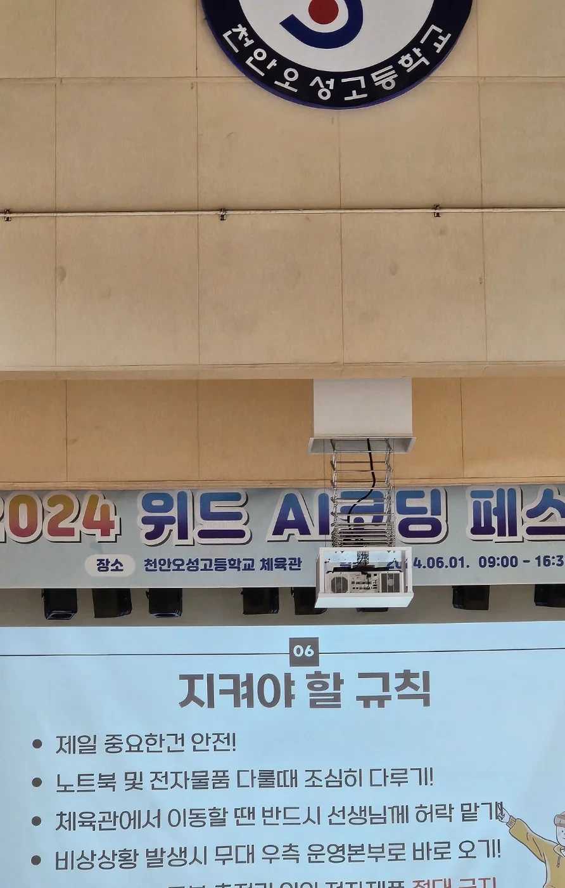
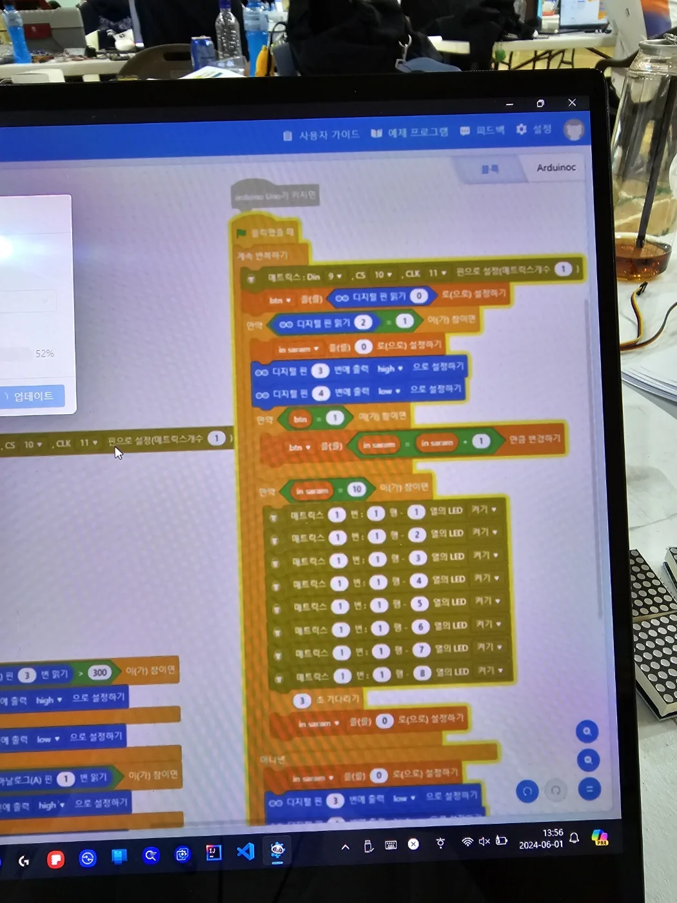
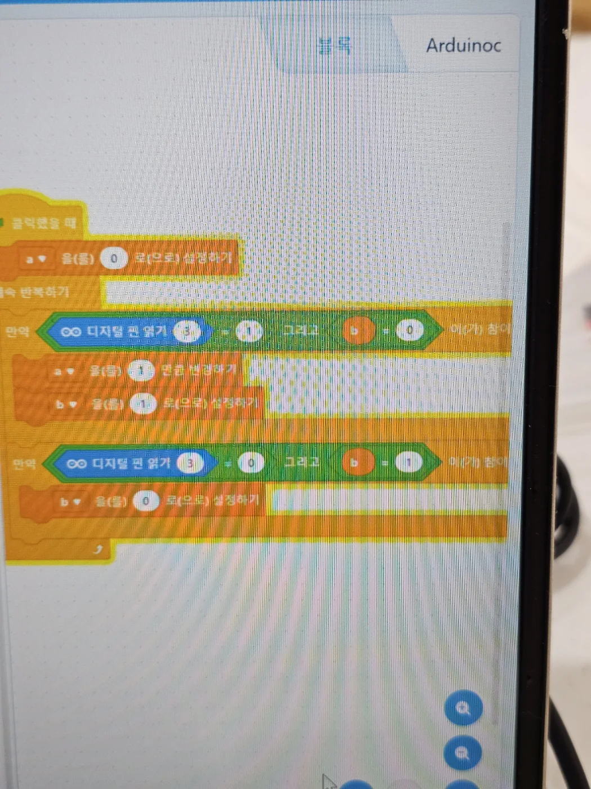
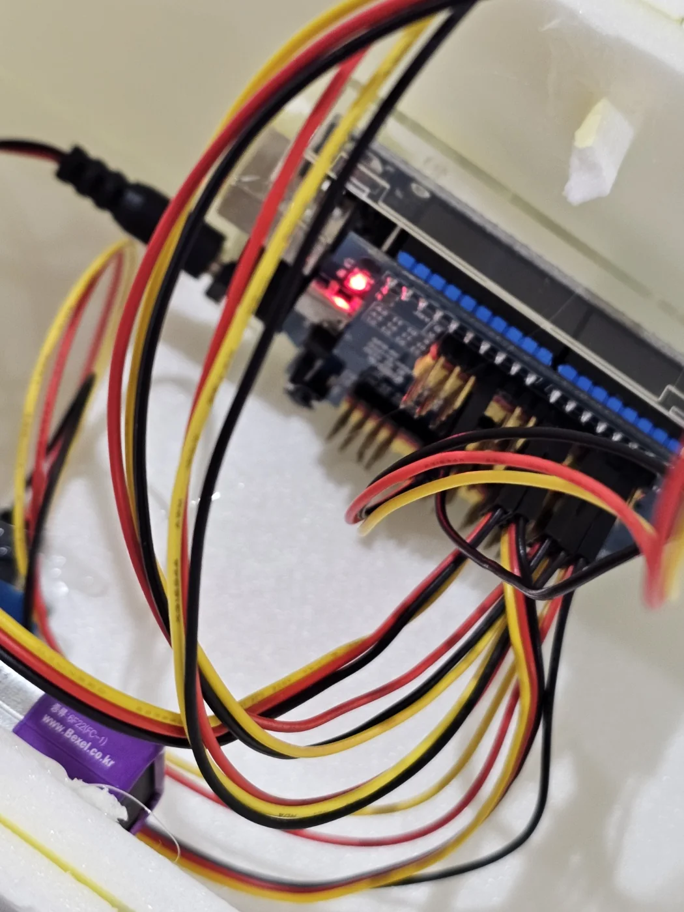
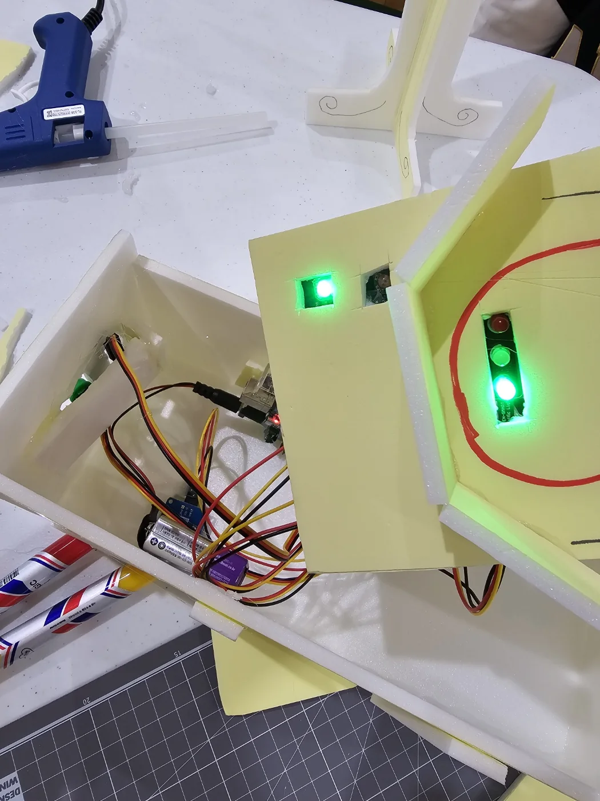
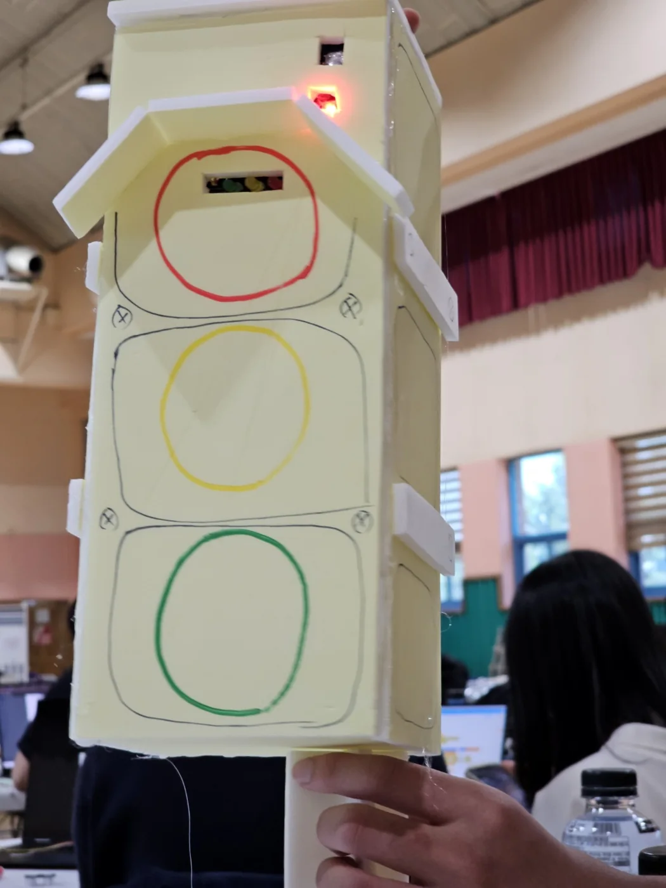
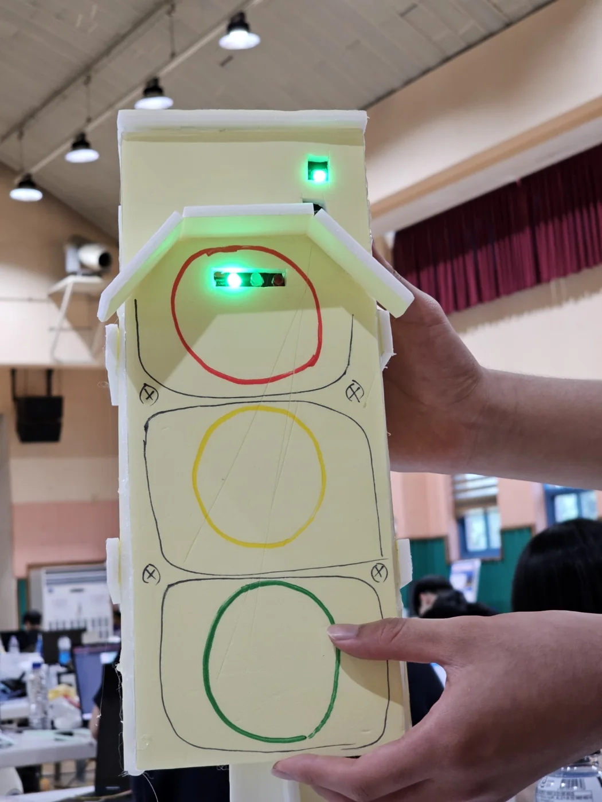

프로젝트 개요
2024 위드 AI 코딩 페스티벌 피지컬 컴퓨팅 분야에서 mBlock · 고릴라셀 · 아두이노로 제작한 급식 줄 계수 시제품입니다. 급식 줄에 사람이 들어올 때 학생이나 선도 위원이 버튼을 눌러 인원을 세고 약 20명이 누적되면 약 10초 동안 빨간불을 켜 잠시 유입을 막은 뒤 다시 초록불로 전환합니다.
주요 기능 / 내용
- 버튼을 누를 때마다 급식 줄 인원 계수
- 약 20명을 기준으로 혼잡도 임계값 판단
- 혼잡 시 약 10초간 빨간불로 추가 유입 제한
- 대기 시간 이후 초록불로 자동 복귀
- mBlock 블록 로직과 아두이노 신호등 LED 연동
- 고릴라셀을 활용한 휴대용 전원 구성
프로젝트 사진







시제품 동작 영상
신호등 계수기 체험
나의 역할
팀원 · 2인 팀
- 계수·신호 전환 로직 기획
- mBlock 블록 코딩
- 아두이노·고릴라셀·LED 배선
- 신호등 시제품 제작